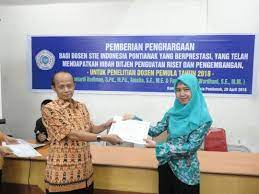

STIEI PONTIANAK
Welcome To STIEI PONTIANAKunknown

TENTANG KAMPUS
STIEI PONTIANAK, NOVEMBER 6, 2021
Yayasan atau badan hukum penyelenggara Sekolah Tinggi llmu Ekonomi ‘Indonesia’ Pontianak merupakan Yayasan Pendidikan Indograha
Manajemen yang didirikan pada tanggal 12 Maret 1992 berdasarkan Akte Notaris Sri Rohani Wahyudi, S.H No. 34 dan telah terdaftar di Pe
ngadilan Negeri Pontianak No. 08/Y.Y.PENDAF/1992/PN.PTK serta telah mendapat pengesahan Menteri Hukum dan HAM SK No. AHU 2276.AH.01.04
hun 2010. Berdasarkan Surat Keputusan No. 073/D/O/1998, Menteri Pendidikan dan Kebudayaan R.I.cq. Direktorat Jenderal Pendidikan Tinggi
cq. Kopertis XI Depdikbud R.I., maka didirikan Sekolah Tinggi llmu Ekonomi ‘Indonesia’ Pontianak (STIE ‘Indonesia’ Pontianak) yang menyel
enggarakan Pendidikan di bidang ilmu Manajemen (Program Sarjana/S1) dan Akuntansi (Program Diploma Tiga/DIII) dimana diharapkan dapat
menghasilkan lulusan yang mampu :
1. Mengisi jabatan-jabatan dan dapat melaksanakan tugas di bidang Manajemen dan Akuntansi;
2. Mampu memajukan /mengembangkan perusahaan/lembaga tempat bekerja;
3. Mampu mengamati, menganalisa serta mengamalkan ilmu pengetahuannya untuk melakukan pekerjaan praktek di bidang Manajemen dan Akuntansi;
4. Mampu memberikan penjelasan dan informasi tentang seluk beluk bidang Manajemen dan Akuntansi kepada masyarakat;
5. Memahami dasar-dasar ilmu pengetahuan pada umumnya serta ilmu sosial ekonomi pada khususnya.;

VISI MISI
,
Visi :
“Menjadikan STIE Indonesia Pontianak sebagai Sekolah Tinggi yang menghasilkan sumber daya manusi
a di bidang manajemen dan akuntansi yang unggul, mandiri, dan berbudaya multikultural di Indonesia.”
Misi :
1. Menyelenggarakan proses pembelajaran yang berkualitas.
2. Meningkatkan produktivitas tenaga pendidik di bidang Tridharma Perguruan Tinggi.
3. Meningkatkan kualifikasi dan kompetensi tenaga pendidik dan tenaga kependidikan.
4. Mengembangkan kemitraan dengan berbagai pihak untuk penerapan dan pengembangan Ilmu Akuntansi dan Manajemen.

CONTACT KAMI
Jalan Imam Bonjol No. 82 - 88 / Gajah Mada No. 38 Pontianak 78121 Telp : 0561-734762 / 0561-761307 Email : admin@stieip.ac.id / stieindonesia_pontianak@yahoo.com WA : 085822385552 (text only)
MY GALERY
-
 Lorem
Lorem
Sed mattis nunc -
Ipsum
Praes tinci sed -

Dorum
Ultricies congue

Tags
Travel New York London IKEA NORWAY DIY Ideas Baby Family News Clothing Shopping Sports Games